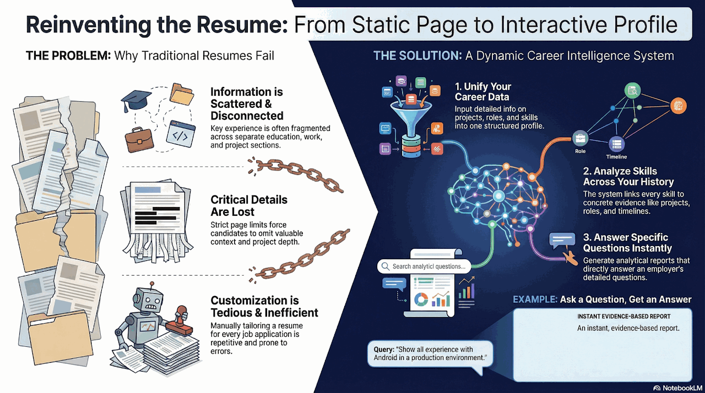
Open Project 1
Interactive Career Analytics and Resume Intelligence System
Build a system that turns static resumes into structured, queryable career profiles, with grounded question answering and skill-based analytics.
Open project ideas for students who want practical AI engineering experience. Topics span LLM applications, computer vision, audio, interaction systems, and collaborative intelligence tools.

Open Project 1
Build a system that turns static resumes into structured, queryable career profiles, with grounded question answering and skill-based analytics.
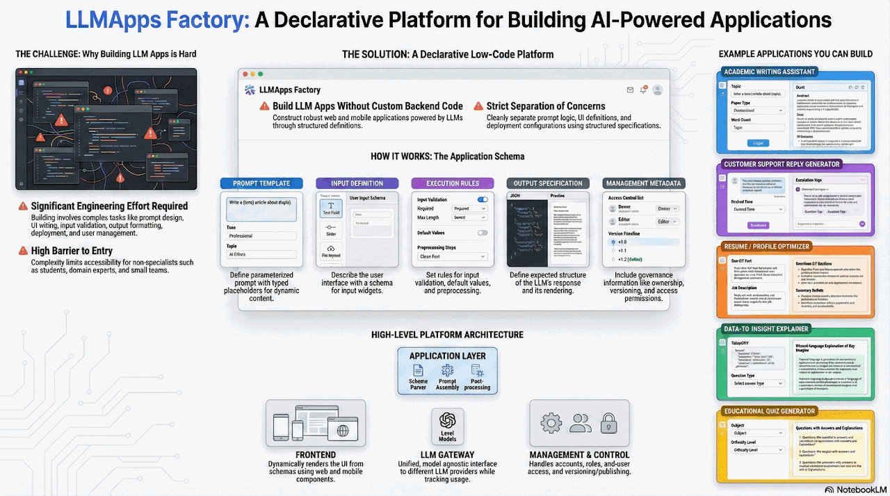
Open Project 2
Design a low-code platform where developers define LLM app behavior declaratively instead of writing repetitive orchestration logic.
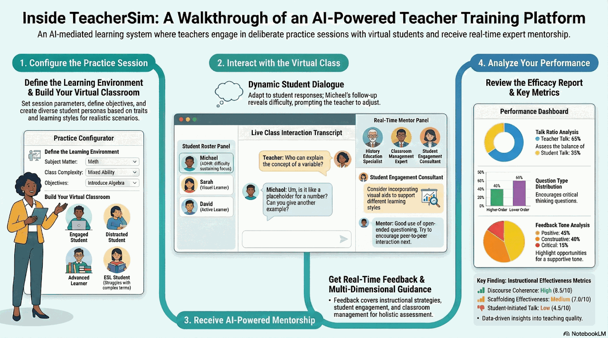
Open Project 3
Create multi-agent classroom simulations for deliberate teaching practice with realistic student behavior and pedagogical feedback loops.
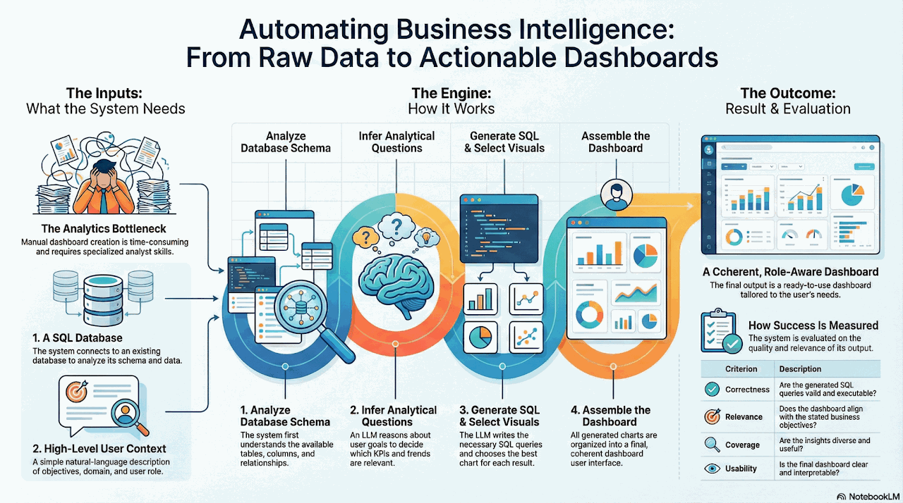
Open Project 4
Transform SQL data into narrative dashboards automatically by combining schema understanding, query generation, and visual summarization.
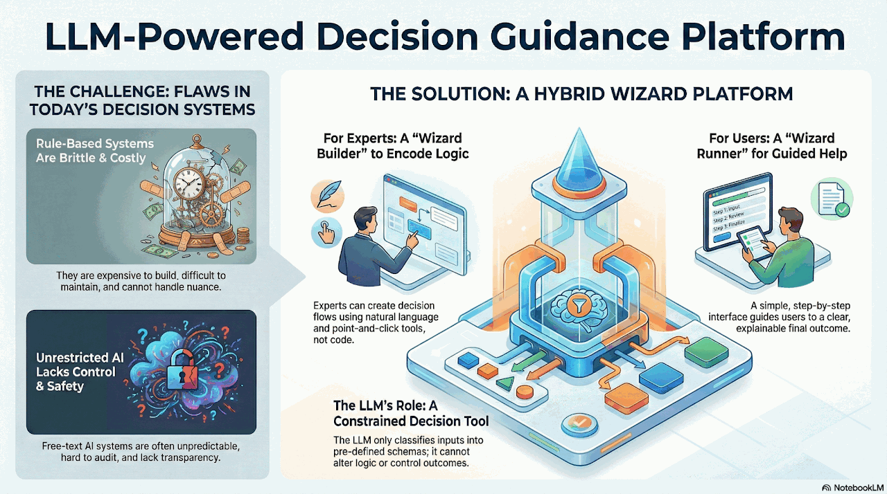
Open Project 5
Build an authoring and runtime environment for expert decision flows, where LLMs convert domain knowledge into explainable interactive guidance.
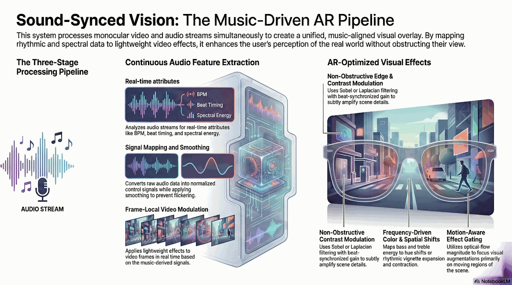
Open Project 6
Synchronize real-time audio features with lightweight video effects to create music-reactive AR experiences with low latency.
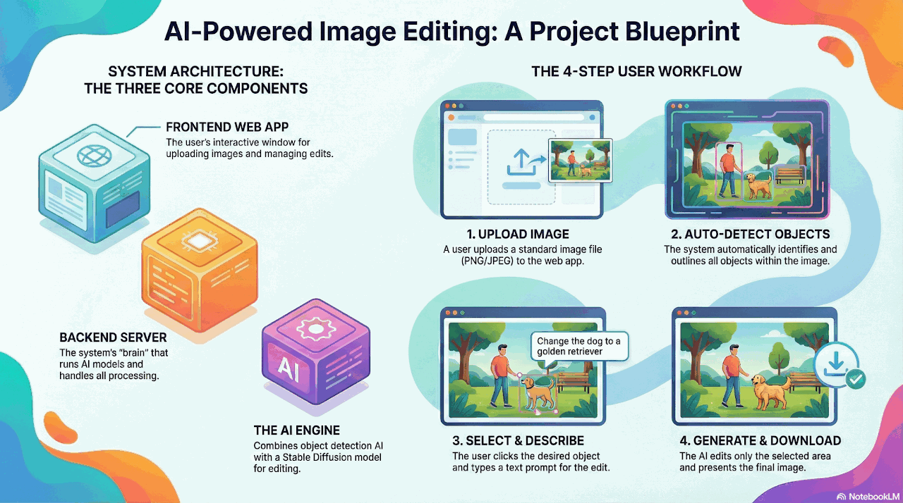
Open Project 7
Combine object detection with diffusion inpainting so users can select regions semantically and apply prompt-guided edits without manual masking.
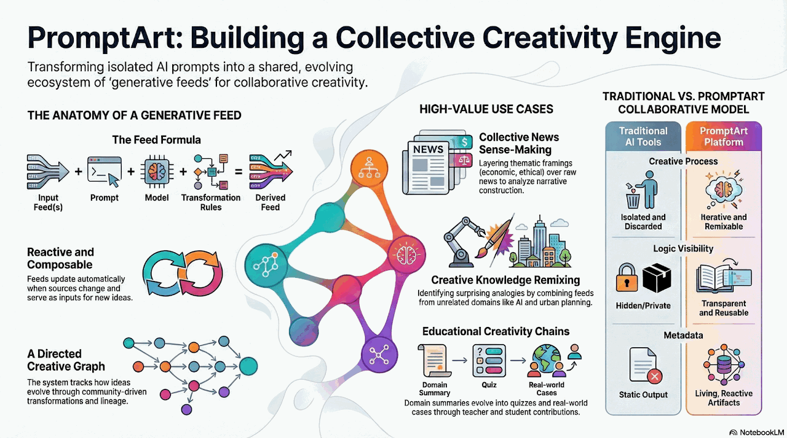
Open Project 8
Create a shared feed model for generative artifacts, where users can fork, remix, and extend creative prompts as reusable collaborative assets.
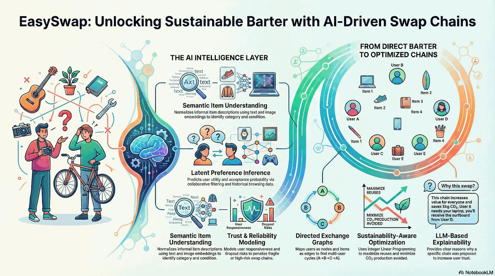
Open Project 9
Use utility modeling and graph optimization to orchestrate multi-party swap chains that improve success rate over direct one-to-one barter.
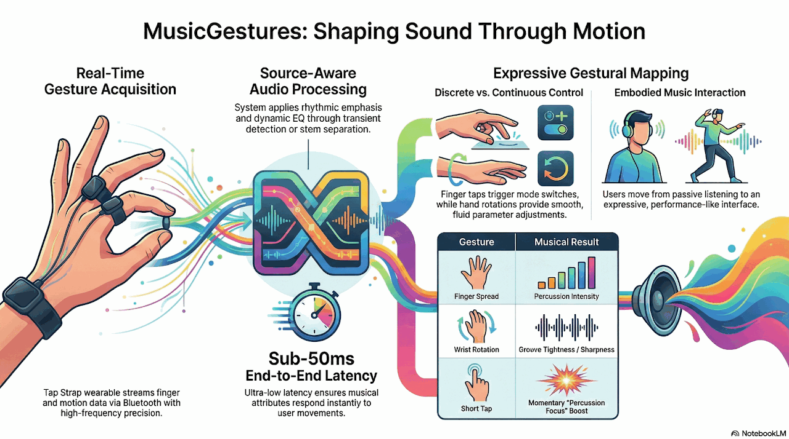
Open Project 10
Map wearable gesture input to live audio transformations, enabling expressive sound control through movement instead of conventional controls.
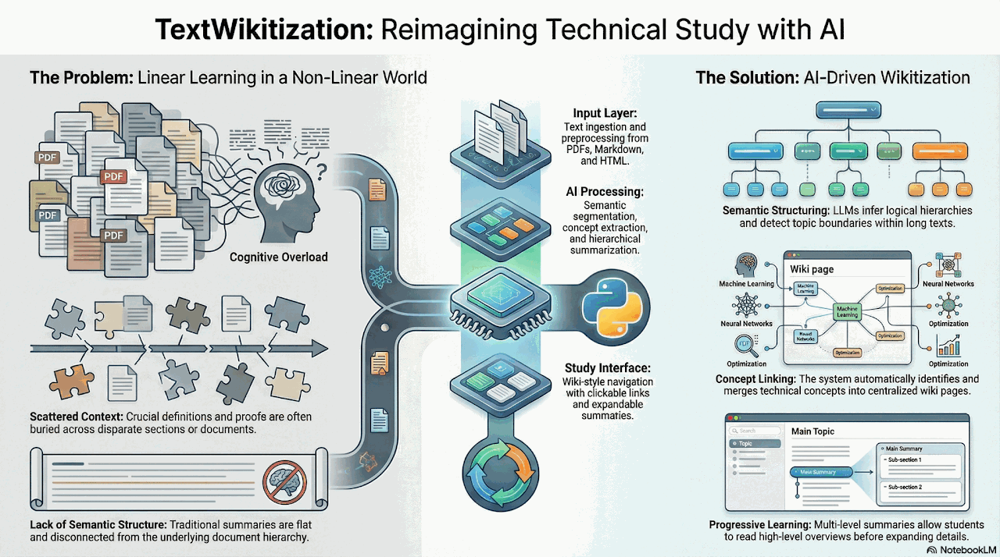
Open Project 11
Transform long technical texts into linked topic maps with layered summaries to support navigation-based learning and cross-document reasoning.